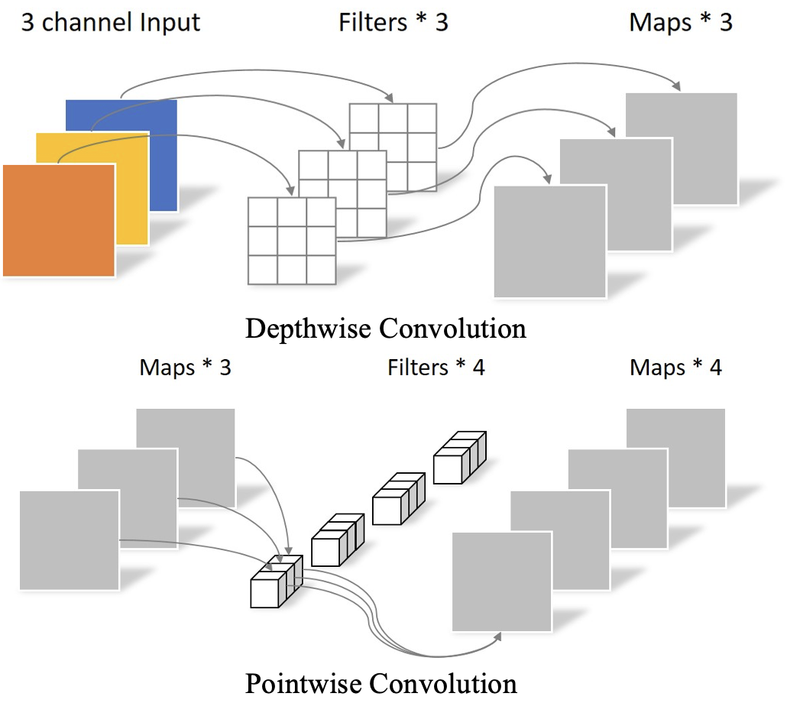
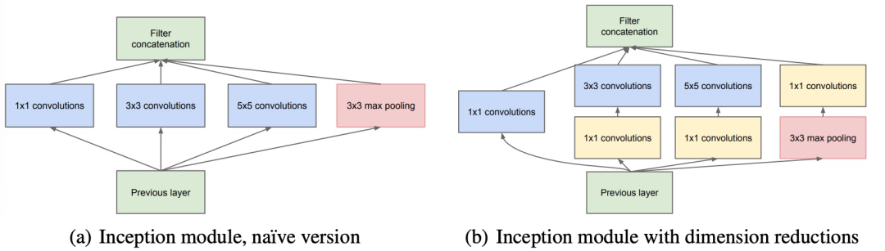
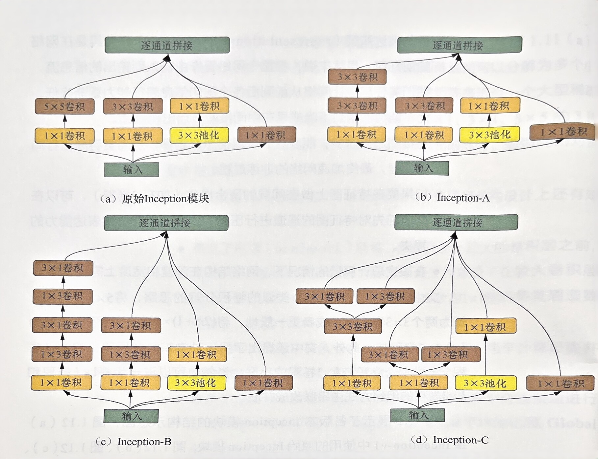
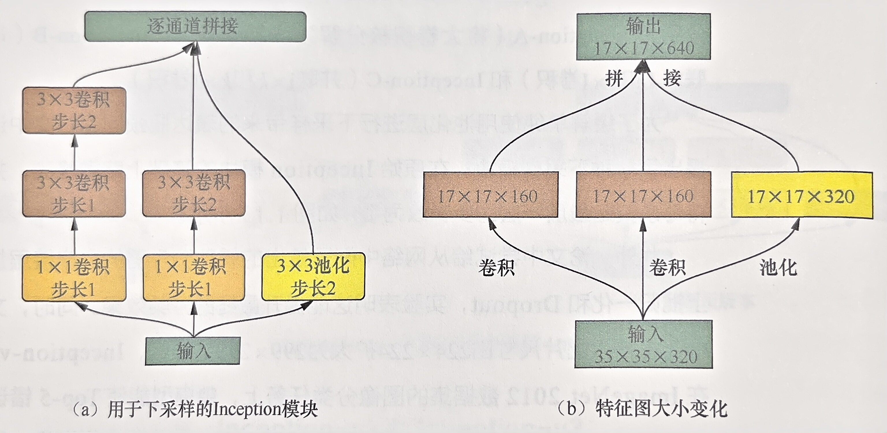
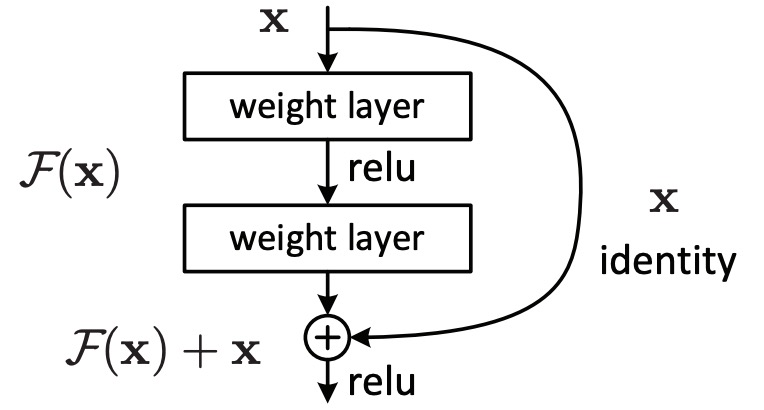
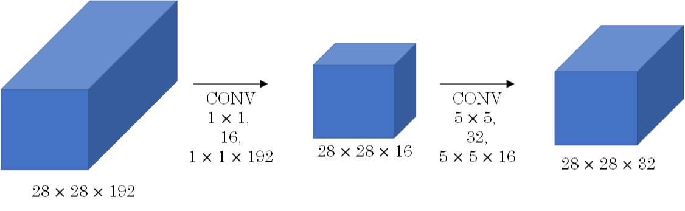
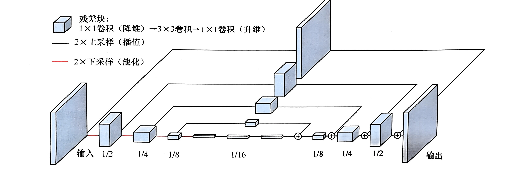

一、卷积基础知识
关键词：卷积操作、卷积核、感受野（Receptive Field）、特征图（feature map）、卷积神经网络
1. 简述卷积的基本操作，并分析其与全连接层的区别
在卷积操作中，卷积核与输入图像上滑动，进行点乘操作，然后求和得到一个单个值，这个值作为输出特征图中的一个像素，每个卷积核都会产生一个对应的特征图。
全连接层的输出层的每个节点与输出层的每个节点都有权重连接，而卷积层具有局部连接、权值共享和输入/输出数据结构化的特点，参数量和计算复杂度远小于全连接层，并且与生物视觉传导机制有一定的相似性。
- 局部连接：卷积核尺寸小于输入特征图尺寸，输出层上的每个节点都只有输入层的部分节点连接；而全连接层中节点之间的连接是稠密的；
- 权值共享：由于卷积核的滑动窗口机制，输出层不同位置的节点与输入层的连接权值是一样的（卷积核参数）；全连接层中不同节点之间的权值是不同的；
- 输入/输出数据的结构化：卷积操作不会改变输入数据的结构信息；而全连接层的的输出数据会被展成（flatten）扁平的一维数组；
- 平移不变性：即对于输入图像中的某个特征，如果在图像中移动它，卷积层仍然可以检测到相同的特征；全连接层通常不具备这种平移不变性；
- 输入尺寸： 卷积层对于不同尺寸的输入图像都可以处理；全连接层输入的大小是固定的。
2. 在卷积神经网络中，如何计算各层的感受野大小
感受野的定义是，对于某层输出特征图上的某个点，在原始输入数据上能影响到这个点的取值的区域。
-
若第 i 层为卷积层或池化层，不考虑padding，则有： $$ F(i)=[F(i-1)-1]\times s+K\\ K=(k-1)\times \text{dilation}+1=(r-1)*(k-1)+k $$ 其中，s 表示 stride，k 表示 kernel_size，$F(0)=1$。
-
若第 i 层为激活层、归一化层，则步长为1，感受野大小 $F(i)=F(i-1)$。
-
若第 i 层为全连接层，则感受野为整个输入数据全域，即 $F(i)=L_{input}$

3. 卷积层的输出尺寸、参数量和计算量
-
输出尺寸： $$ H_{out}=\lfloor\frac{H_{in}+2\times p-K}{s}\rfloor+1 $$ 其中，p 为 padding，s 为 stride，$K=(k-1)\times\text{dilation}+1$，k 为 kernel_size。
向下取整是放弃了左上侧的部分数据，使得卷积核滑动窗能够恰好到达右下角的点。
- padding=same：在特征图上下/左右共填充 k-1 行/列，此时输出 $H_{out}=\lfloor\frac{H_{in}-1}{s}\rfloor+1$
- padding=valid：不对输入特征图进行边界填充，直接放弃右下侧卷积核无法滑动到的区域。
padding 的作用：
- 避免边缘信息丢失
- 保持特征图大小
- 控制输出大小
-
参数量：
每个卷积核的参数量为 $C_{in}K_wK_h+1$ ，1 表示偏置，若不考虑偏置则可以忽略。有 $C_{out}$ 个卷积核，则参数量为： $$ C_{out}(C_{in}K_wK_h+1) $$
-
计算量：
卷积层的计算量主要取决于三个因素：输出特征图的尺寸、卷积核的尺寸和输出通道数。
卷积操作的计算量大约为 $C_{in}K_wK_h$，卷积核滑动的次数为输出特征图的数据个数，即 $C_{out}L_wL_h$，因此整体的计算量为： $$ C_{in}C_{out}L_w^{(o)}L_h^{(o)}K_wK_h $$
二、卷积的变种
关键词：分组卷积（Group Convolution）、转置卷积（Transposed Convolution）、空洞卷积（Dilated Convolution）、可变形卷积（Deformable Convolution）
1. 简述分组卷积及其应用场景
在普通卷积中，由于一个卷积核对应输出特征图的一个通道，而每个卷积核会作用到输入特征图的所有通道上，因此普通卷积在“通道”这个维度上是“全连接”的。
分组卷积是将输入通道和和输出通道划分同样的组数，仅让处于相同组号的输入输出通道相互进行“全连接”。若记 g 为划分的组数，则分组卷积能降低计算量和参数量为原来的 1/g。

分组卷积最初在 AlexNet 网络中引入，用于解决单个 GPU 无法处理含有较大计算量和存储需求的卷积层这个问题，用分组卷积将计算和存储分配到多个GPU上并行计算。目前分组卷积更多用于构建小型网络模型，例如深度可分离卷积（depthwise ）。
分组卷积潜在的问题：
-
效率提升不如理论上明显：对内存的访问频繁程度并未降低，且现有 GPU 加速库（cuDNN）对其优化程度有限；
-
信息交互弱：因为它独立地处理每个组，可能无法充分利用输入通道之间的相关性。
深度可分离卷积（Depthwise Separable Convolution）：
将标准的卷积操作分解为两个步骤：深度卷积（Depthwise Convolution）和逐点卷积（Pointwise Convolution）：
- 深度卷积（Depthwise Convolution）： 深度卷积独立地对输入的每个通道进行卷积操作，对于输入通道数为C的输入特征图，它使用C个卷积核进行卷积。参数量为 $C_{in}\times K\times K$。
- 逐点卷积（Pointwise Convolution）： 在深度卷积之后，使用1x1的卷积改变深度卷积输出的通道数。参数量为 $C_{in}\times C_{out}$。
总的参数量为 $C_{in}\times K\times K + C_{in}\times C_{out}$。
深度可分离卷积能够减少参数量和计算量，加速推理过程，实现轻量级模型和移动端应用。但同样存在信息交互弱的问题，可能对模型的性能产生一定影响。

2. 1x1 卷积的作用
1x1 卷积，也称为逐点卷积（Pointwise Convolution），卷积核大小为 1x1，不考虑输入数据局部信息之间的关系，而把关注点放在不同通道间。
作用：
- 降维和增加通道数： 1x1 卷积可以降低特征图的通道数，从而减少网络的参数量和计算复杂度。同时，它也可以增加通道数，引入更多的特征表示。
- 特征融合： 1x1 本质是对每个像素点在不同通道上进行线性组合，可以用于特征的融合，从而提高模型的表征能力。
- 非线性映射： 尽管1x1卷积只是在通道上进行线性组合，但之后可以通过非线性激活函数进行非线性映射，增加网络的表达能力。
3. 简述转置卷积的主要思想以及应用场景
转置卷积（Transposed Convolution），也称为反卷积（Deconvolution）。主要思想是将卷积操作中的输入和输出交换，从而将低维特征映射扩展到高维特征映射。
转置卷积是通过卷积核的翻转和补零操作来实现的，具体实现时，以二维卷积为例，一个卷积核尺寸为 $k_w\times k_h$，滑动步长 $(s_w,s_h)$，边界填充尺寸为 $(p_w,p_h)$ 的普通卷积：
- 如果 $s>1$，对输入特征图进行扩张（上采样）：相邻数据点之间填充 $s_{w/h}-1$ 个零；
- 对输入特征图进行边界填充：对左右/上下两侧分别填充 $\hat{p}{w/h}=k{w/h}-p_{w/h}-1$ 个零列/行；
- 变换后再输入特征图上做卷积核大小为 $k_w\times k_h$，滑动步长为 $(1,1)$ 的普通卷积。
输出特征图大小为 $H_{out} = s\times(H_{in}-1)+k$
转置卷积的应用场景：
- 图像分割和语义分割： 转置卷积可用于将低分辨率的特征图上采样到原始输入图像大小，以生成像素级的分割结果。
- 图像生成和超分辨率重建： 在图像生成任务中，例如GAN（生成对抗网络）中的生成器部分，转置卷积用于将输入的随机噪声扩展成高分辨率的图像。同样，转置卷积在超分辨率重建中也能够将低分辨率图像上采样成高分辨率图像。
- 卷积神经网络中的上采样： 使用转置卷积进行上采样，提高特征图的尺寸，以便更好地捕捉图像中的细节和全局信息。
4. 简述空洞卷积的设计思路
空洞卷积（Dilated Convolution），也称为膨胀卷积或扩张卷积。通过在卷积核中引入扩张率（dilation rate）这个超参数来指定相邻采样点之间的间隔：扩张率为 r 的空洞卷积，卷积核上相邻数据点之间有 r-1 个空洞，如下图所示，这是一个卷积核大小为 3，扩张率为 2 的空洞卷积。
空洞卷积的感受野为 $F = (r-1)*(k-1)+k$，当卷积核大小为 3，扩张率为 2 时，感受野计算方式如下图所示。经过一层空洞卷积感受野为 $3\times 3$，两层空洞卷积后为 $5\times 5$。
空洞卷积利用空洞结构扩大了卷积尺寸，不经过下采样操作即可增大感受野，同时还保留了输入数据的内部结构，能够捕捉更广阔的上下文信息，从而增强卷积神经网络的感知能力。
5. 可变形卷积旨在解决哪类问题
可变形卷积（Deformable Convolution）是一种改进的卷积操作，旨在解决传统卷积在处理不规则形状和变形目标时的不足。可变形卷积通过引入可学习的偏移量来动态调整卷积核的采样位置，从而适应不同目标的变形和不规则形状，提高模型对于复杂场景的表征能力。
如下图所示，（a）是普通卷积和，（b）（c）（d）是可变形卷积核。
当偏移后的采样点不是整数时，需要用双线性插值来计算对应的特征值。
三、卷积神经网络的整体结构
关键词：AlexNet、VGGNet、Inception、ResNet
1. 简述卷积神经网络近年来在结构设计上的主要发展和变迁（从 AlexNet 到 ResNet 系列）
-
AlexNet
网络结构是堆砌的卷积层和池化层，在网络末端加上全连接层和 Softmax 以处理多分类任务。
- 采用 ReLU 替换 Sigmoid 作为激活函数，缓解深层网络梯度消失的问题；
- 引入局部响应归一化（Local Response Normalization，LRN）；
- 应用 Dropout 和数据扩充（data augmentation）来提升效果；
- 使用步长小于池化核的重叠最大池化；
- 使用分组卷积来突破当时 GPU 的显存瓶颈。
-
VGGNet
相较于 AlexNet，VGGNet 做了以下改变：
- 用多个 $3\times3$ 小卷积核替代之前的 $5\times 5,\ 7\times 7$ 大卷积核，这样可以在更少参数量合计算量的情况下获得同样的感受野和更大的网络深度；
- 用 $2\times2$ 池化核替代之前的 $3\times3$ 池化核；
- 去掉局部响应归一化模块。
-
GoogLeNet / Inception-v1
提出 Inception 模块，将大通道卷积层替换为多个小通道卷积层组成的分支结构。
- 提出瓶颈（bottleneck）结构，即在计算大卷积层之前先用 $1\times1$ 卷积对通道压缩以减少计算量；
- 网络中间层使用多条分支，连接辅助分类器，缓解梯度消失问题；
- 修改 VGGNet 等网络在末端使用多个全连接层的做法，降低一个全连接层换成平均池化层（Global Average Pooling）；
 -
Inception-v2 和 Inception-v3
提出四点网路结构设计的准则：
- 避免表达瓶颈（representational bottleneck），尤其是网络前几层。尽量让网络从前到后各层的信息表征能力逐渐降低，不能突然剧烈下降或中间某些节点出现瓶颈；
- 特征图通道越多，能表达的解耦信息越多，更容易进行局部处理，加速网络训练过程；
- 若要在特征图上做空域的聚合操作，可以先压缩特征图通道；
- 在限定总计算量的情况下，网络结构的深度和宽度需要平衡；
文中提出两种卷积分解思路：
- 将 $5\times5$ 卷积核分解为两个 $3\times3$ 小卷积核，更一般的，将 $(2k+1)\times(2k+1)$ 卷积核分解为 k 个 $3\times3$ 卷积核。如下图 (b)；
- 将 $k\times k$ 卷积核分解为 $1\times k$ 和 $k\times 1$ 卷积核的串联/并联。如下图 (c) 和 (d)；
为了缓解单纯用池化层下采样带来的表达瓶颈问题，在原始 Inception 模块上修改，将每条支路最后一层的步长改为2，如下图。
 -
ResNet
ResNet 的提出基于这样一种现象：随着网络层数加深，训练误差和测试误差都会上升，这种现象称为网络退化（degeneration）。ResNet 使用跳层连接（shortcut connection）来解决这个问题，跳层连接有以下两点好处：
- 抑制梯度消失的现象，使网络在加深时性能不会下降；
- 由于 “近道” 的存在，若网络在层数加深退化时，可以通过控制 “近道” 和 “非近道” 的组合比例来退回到之前浅层时的状态，即 “近道” 具备自我关闭能力。
 -
Inception-v4 和 Inception-ResNet
v4 在 v3 的基础上修改了网络初始几层的结构（Stem），同时应用了 Inception-A、Inception-B 和 Inception-C 模块，提出 Reduction-A、Reduction-B 模块。
ResNeXt 缩小了瓶颈比，并将中间的普通卷积改为分组卷积。
四、卷积神经网络的基础模块
关键词：批归一化（Batch Normalization, BN）、全局平均池化（Global Average Pooling）、瓶颈结构、沙漏结构（hourglass）
1. 批归一化是为了解决什么问题？它的参数有何意义？它在网络中一般放在什么位置？
- 解决梯度消失和梯度爆炸问题：批归一化通过将输入数据在每个批次上进行标准化，可以使得数据的分布更稳定，有助于缓解梯度消失和梯度爆炸问题；
- 加速收敛：批归一化避免训练过程中的内部协变量偏移现象，使训练过程更稳定，可以使用更高的学习率，加速训练；
- 增强泛化能力：批归一化作为一种正则化方法，可以减少模型的过拟合，增强泛化能力。
BN公式如下： $$ y=\gamma\cdot\frac{x-\mu}{\sqrt{\sigma^2+\epsilon}}+\beta $$ 有 $\gamma,\beta$ 两个可学习的平移参数和缩放参数，具有以下作用：
- 保留网络各层在训练过程中的学习成果。若没有这两个参数，BN 退化为普通的标准化，不能有效学习。添加参数后可以保留每个神经元学习的成果；
- 保证激活单元的非线性表达能力。添加参数后，BN 的数据可以进入到激活函数的非线性区域；
- 使 BN 模块具有自我关闭功能。若 $\gamma,\beta$ 分别取数据的均值和标准差，则可以回复初始的输入值，即关闭 BN 模块。
BN 模块通常放在激活层前，可以避免 BN 破坏非线性特征的分布；此外，BN 可以使数据不落入激活函数的饱和区域，缓解梯度消失问题；
由于现在常用激活函数为 ReLU，可以将 BN 放在激活层后，避免数据在激活层之前被转化成相似模式而使非线性特征趋于同化。
2. 用于分类任务的卷积神经网络的最后几层一般是什么层？在最近几年有什么变化？
网络末端一般是几层全连接层。
近几年，分类网络在卷积层之后、最后一层之前通常采用全局平均池化，它具备与全连接层相似的效果（提取全局信息），并有如下优点：
- 参数量和计算量大大降低。GAP 的参数量为0，计算量为 $cwh$；输出单元数为 k 的全连接层参数量和计算量都是 $cwhk$。
- 具有较好可解释性。可以知道特征图上那些点对最后的分类贡献大。
3. 卷积神经网络中的瓶颈结构和沙漏结构提出的初衷是什么？可以应用于哪些问题？
-
瓶颈结构：
瓶颈结构初衷是为了降低大卷积层的计算量。在大卷积层之前先用 1x1 卷积来缩减特征图通道数；在完成大卷积后，根据需要可以再使用 1x1 卷积来恢复特征图通道数。
瓶颈结构能够用更小的计算代价达到与之前相似或更好的效果（增加了网络层数）。
-
沙漏结构
沙漏结构的设计初衷是解决图像分割、关键点检测等任务中对于全局和局部信息的兼顾问题。沙漏结构一般包括以下两个分支：
- 自底向上（bottom-up）：利用卷积、池化等操作将特征图的尺寸逐层压缩(通道数可能增加)，类似于自编码器中的编码器(encoder)
- 自顶向下（top-down）分支：利用反卷积或插值等上采样操作将特征图的尺寸逐层扩大(通道数可能降低)，类似于自编码器中的解码器(decoder)。

五、其他常见问题
1. 为什么卷积核大小一般为奇数？
- 方便 padding：padding 大小通常为 $\frac{k-1}{2}$，当 k 为奇数时，可以整除，实现两侧对称的 padding；
- 中心点：奇数大小卷积核有中心点，对边沿、对线条更加敏感，可以更有效的提取边沿信息。